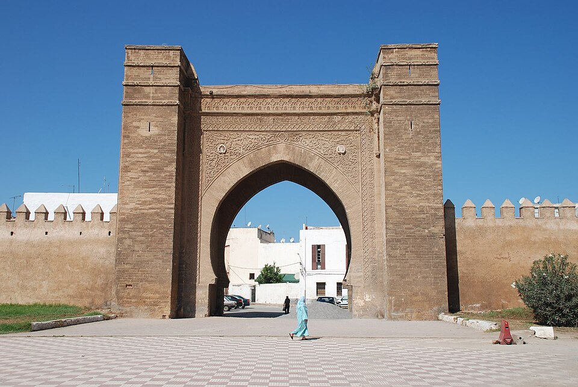
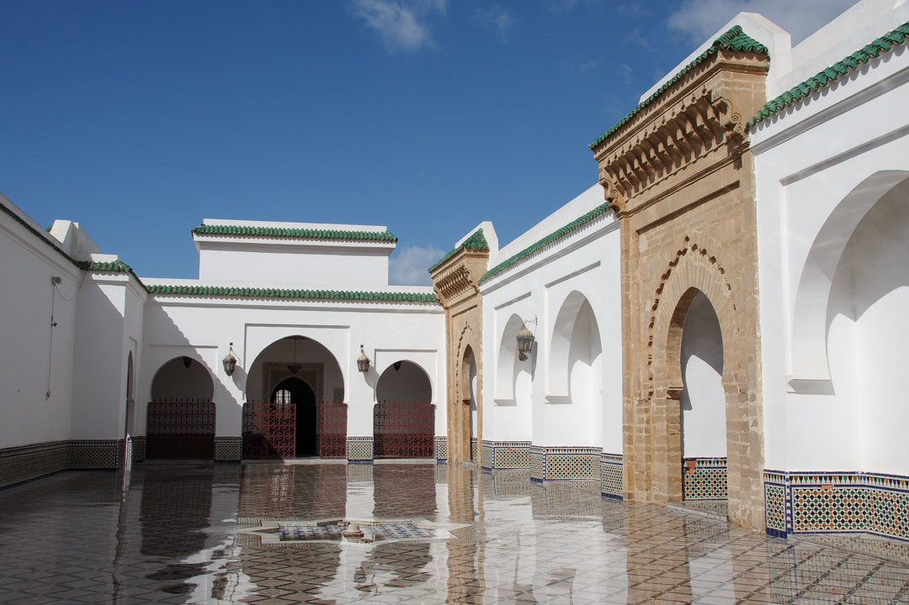
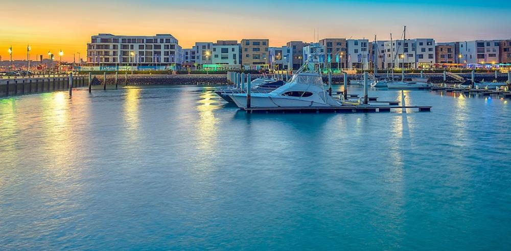

Lieux Incontournables
Explorez les merveilles emblématiques de Salé.

Porte Bab Lamrissa
L'une des plus grandes et des plus anciennes portes fortifiées du Maroc (construite au XIIIe siècle). Ses dimensions colossales permettaient jadis aux navires corsaires d'y passer pour accéder à un ancien port d'arsenal situé à l'intérieur des terres.
Localiser
La Médersa Mérinide
Bâtie en 1341 par le sultan Abu al-Hasan, cette ancienne école coranique est un pur chef-d'œuvre de l'architecture hispano-mauresque. Ses détails en bois de cèdre sculpté, stucs brodés et zelliges colorés rivalisent avec les plus beaux monuments de Fès ou de Grenade.
Localiser
La Grande Mosquée
Fondée par les Almohades au XIe siècle, c'est la troisième plus grande mosquée du Maroc. Elle se distingue par son imposant minaret de pierre et a longtemps été le lieu de rassemblement des lettrés, des savants et des figures du nationalisme marocain.
Localiser
La Marina du Bouregreg
Symbole de la renaissance et de la modernité de l'estuaire. Côté Salé, cette somptueuse marina offre une promenade piétonne luxueuse bordée de cafés et restaurants huppés, avec une vue majestueuse sur la Tour Hassan et la Kasbah des Oudayas de Rabat.
Localiser